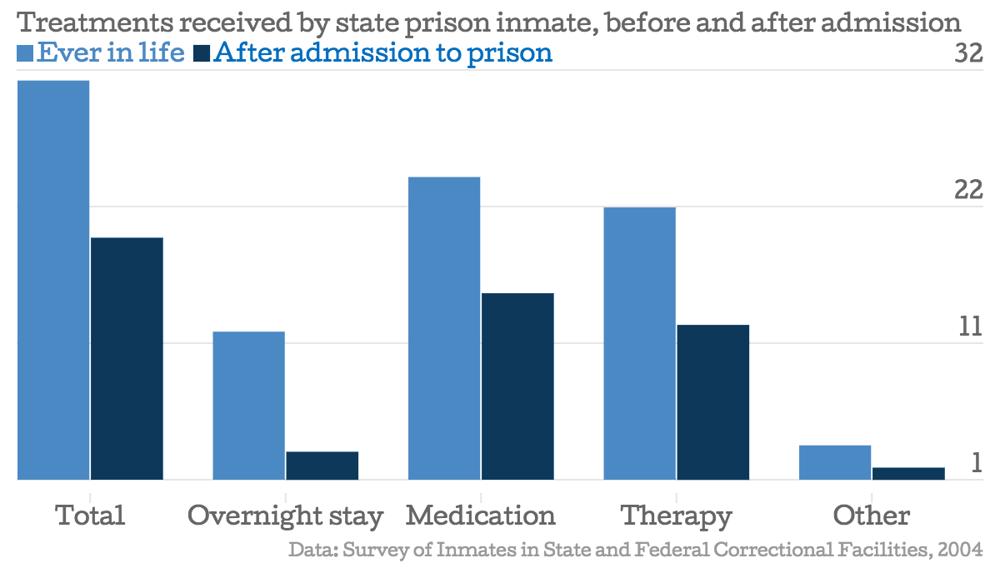

Changes underway in how jails, prisons handle mentally ill
By Julia Haslanger & Adriele Parker
In New York City, nearly 40 percent of jail inmates suffer from a mental illness. And at the city’s primary jail, Rikers Island, 67 percent have indicated a mental health issue and 21 percent are “severely mentally ill."
Almost two-thirds of inmates surveyed in state prisons nationwide have at least one mental illness, according to a 2004 survey by the Bureau of Justice Statistics. Prisons and jails don’t have a uniform way of screening for or treating mental illnesses. Those inconsistencies are especially problematic as inmates are transferred from one prison to another during their sentences. And when inmates leave the correctional system, they can often struggle to find treatment for their illnesses.
The New York City mayor’s task force, which launched in 2014, looks closely at the connections between the criminal justice system and behavioral health. The group put out an action plan in December, and has a $130 million four-year investment. And the state has a new law that allows for more access to treatment for recently released prisoners who received mental health treatments during their last three years, the AP reports.
How prevalent are mental illness within the prison population?
Within New York City, the proportion of inmates with mental health needs is increasing. (see "A growing concern" graphic) According to a report from the mayor’s office, the trend seen in the graphic has continued, with the overall population decreasing to 11,408 in 2014, but with 38 percent of inmates having at least one mental health issue. The report also says that “approximately 7 percent of the jail population is made up of individuals with serious mental illness, meaning that they suffer from diseases such as schizophrenia and bipolar disorder."
In New York state prisons, the level of inmates with serious mental illnesses increases, which follows a national pattern of local jails having smaller proportions of mentally ill than state or federal prisons. The Treatment Advocacy Center cites a 2008 article in the Poughkeepsie Journal as saying “about 12 percent of the state prison population is afflicted with a serious mental illness."
Nationally, the Bureau of Justice Statistics found in 2004 that almost two-thirds of state prison inmates reported having at least one mental illness. A report on the same survey found that 15 percent of state prisoners “reported symptoms that met the criteria for a psychotic disorder."
But … how the correctional system screens and defines mental illness is not uniform.
It’s hard to compare numbers provided by jails and prisons about their mentally ill populations because they are not uniform in how they identify those needing treatment, and how they classify different illnesses. A 2013 study found 22 different screening tools in use by jails and prisons.
The National Commission on Correctional Health Care has developed standards...
The NCCHC offers accreditation for faciliites that follow their mental health standards, in addition to their overall health services standards.
What treatments are used? How often?
The Treatment Advocacy Center explains some of the laws and practices in New York for treating mentally ill inmates. (The New York state section begins on page 72.)
Outside of just New York, state prisons nationwide tend to offer medication more often than other treatments, which mirrors the treatment the prisoners receive outside the correctional system.
Local jails are the only level of correctional facility where the percentage of inmates who receive treatment is lower than the percentage who have received treatment in the year prior to their arrest.
This could be for a variety of reasons, including inmates spending a shorter length of time in jails than in prisons (though in New York City at least, inmates with mental illnesses tend to have significantly longer stays in jail than those without mental illnesses). Other possible explanations include those who are in a correctional facility longer could be more likely to develop a mental illness, or prisons may be better equipped to offer treatment than many local jails.

How are cities and states trying to address the problem?
In early April, a federal judge issued a permanent injunction against the state of Washington, requiring them to provide mentally ill inmates with competency evaluations and treatment within seven days of being detained. According to The Seattle Times, U.S. District Judge Marsha Pechman “gave the state nine months to resolve the competency crisis by hiring needed staff and providing hospital bed space." The injunction came after the American Civil Liberties Union and Disability Rights of Washington and lawyers of mentally ill inmates filed a class-action lawsuit against the state.
Recently in New York there have been numerous complaints of mistreatment and undertreatment by mentally inmates of Rikers Island. According to the New York Times, “For years, Rikers has been filling with people like Mr. Megginson [one of the severely mentally ill inmates], who have complicated psychiatric problems that are little understood and do not get resolved elsewhere: the unwashed man passed out in a public stairwell; the 16-year-old runaway; the drug addict; the belligerent panhandler screaming in a full subway car."
Changes in screening and treatment
Many have applauded Mayor Bill de Blasio’s administration for their efforts to improve conditions for the mentally ill. In 2014 the Mayor’s Task Force was launched in efforts to decrease the number of mentally ill inmates by partnering with the New York City Police Department to ensure that officers are adequately trained to handle mentally ill suspects and to also create drop-off centers for those that have committed minor offenses. Additionally the Task Force’s 2014 annual report called for a pilot program to be launched in Manhattan within the next year so that universal mental and physical screening occurs before every arraignment. By doing so, those who require treatment will possibly be diverted to the necessary services instead of being incarcerated.
The mayor also pushed for a “culture change" at Rikers during a November 2014 press conference. Through tens of millions of dollars therapeutic units have been created at Rikers to reward good behavior and inmates are no longer spending more than a year in solitary confinement.
A new law took effect in February increasing the number of discharged mentally ill inmates that will receive government-sponsored treatment. According to the Associated Press the services include “medication, enrollment in Medicaid and initial clinic appointments."
Additionally, the New York State Division of Criminal Justice Services received a $200K grant called “Youth Diversion Through Evidence-Based Mental Health Screening and Treatment," which runs from October 2013 to September 2015, according to a BJA State Fact Sheet.